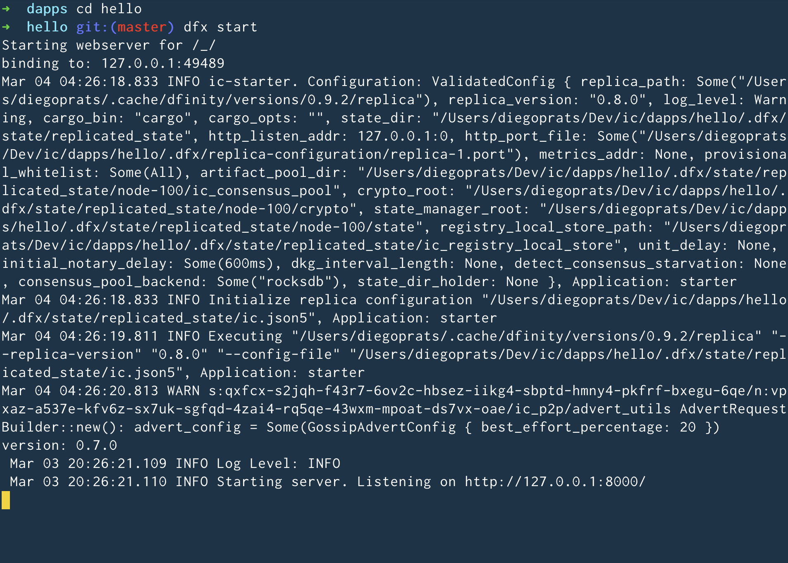
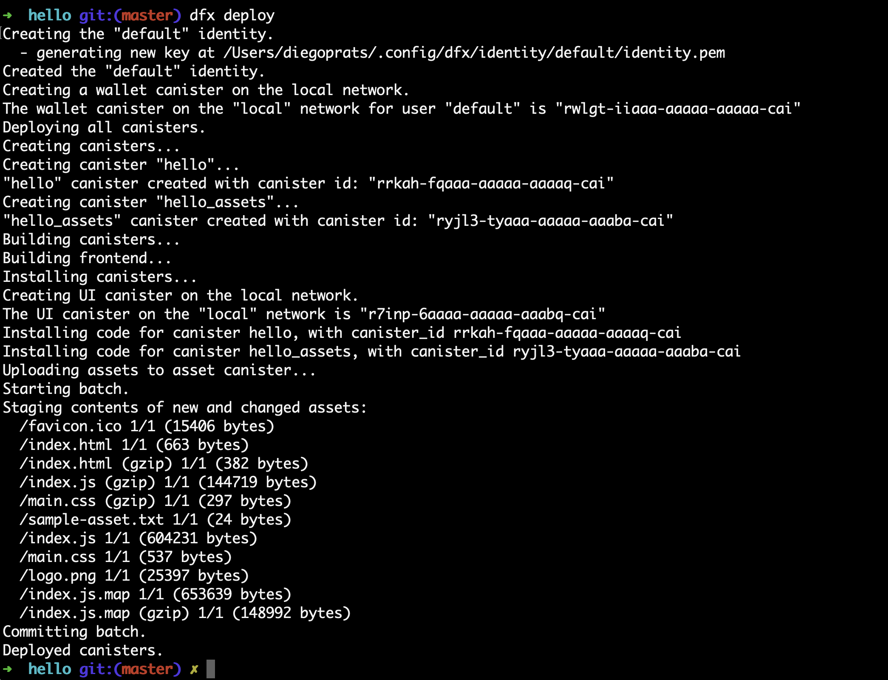

如何在 20 分钟内部署一个“hello world”智能合约/dapp
这是一个快速而简约的教程，用于在 20 分钟或更短的时间内将“hello world”智能合约或 dapp 部署到 IC。 运行本教程所需要的只是使用终端的基本知识（无需编辑代码）。
简介
在本教程中，我们将部署一个简单的 Hello dapp，它只有一个功能——称为 greet。 greet 函数接受一个文本参数并返回带有问候语的结果。 例如，如果您使用文本参数 Alice 调用 greet 方法。
-
如果您通过命令行调用它，dapp 将在终端中返回
Hello,Alice!。 -
如果你在浏览器中访问 dapp，它会弹出警告窗口，上面写着
Hello,Alice!
虽然代码为您准备好开箱即用，但这个 dapp 包含用 Motoko 编写的后端代码，Motoko 是一种专为与互联网计算机 (IC) 交互而设计的编程语言，以及一个简单的基于 webpack 的前端。
本教程所需的概念
-
canister smart contract/dapp 是一种捆绑代码和状态的智能合约。 容器可以作为智能合约部署在互联网计算机上并通过 Internet 访问。
-
燃料费 是以处理、内存、存储和网络带宽的形式消耗的资源的计量单位。 就本教程而言，这类似于以太坊的 gas:这是运行 dapp 所需要的，但对于开发人员来说，它更稳定、更便宜。 每个容器都有一个燃料费帐户，对容器消耗的资源进行收费。 互联网计算机的实用程序令牌 (ICP) 可以转换为燃料费并转移到容器中。 ICP 始终可以使用测量的 ICP 当前价格转换为燃料费SDR 使用一万亿燃料费对应一个 SDR 的约定。 在本教程中，您将从cycles faucet获得免费燃料费。
支持的平台和操作系统
-
Linux
-
macOS (12.*.*)
-
英特尔
-
M1（可能需要Apple’s Rosetta）使配备 Apple 芯片的 Mac 能够使用为配备 Intel 处理器的 Mac 构建的应用程序。
-
1. 安装工具
要构建 dapp，用户需要安装以下内容:
1.1 node.js
本教程最适合使用高于 16.* 的 node.js 版本。
安装 node.js 的方法有很多，包括来自链接:https://nodejs.org/en/download[nodejs.org网页]。
除了安装 node.js，用户还需要安装
-
节点包管理器（NPM）。
-
节点版本管理器（NVM），见installing NVM。
2. 创建一个默认项目（1 分钟）
2.1 启动一个新项目
互联网计算机上的 Dapps 作为项目启动，使用 dfx 父命令及其子命令启动。 您可以使用 dfx 父命令及其子命令创建项目。 本教程从默认示例 dapp 开始，说明如何使用项目中的启动文件创建 dapp。 当您创建一个新项目时，dfx 命令行界面会将默认项目目录结构添加到您的工作区。
为您的第一个应用程序创建一个新项目:
3. 将 dapp 部署到本地机器（3 分钟）
使用两个终端窗口/选项卡
现在代码已经存在，下一步是在本地机器上启动 IC 的本地版本。 为此，开发人员应保持两个终端打开:
-
终端窗口/选项卡A:
-
显示本地版本的 IC 运行
-
类似于开发人员在 web2 项目中经常启动本地服务器的方式（例如 Node.js 的 Express、Python 的 Django、Ruby 的 Rails 等…）
-
-
终端窗口/选项卡B:
-
用于发送 messages 到本地版本的 IC
-
类似于开发人员如何将 HTTP API 消息发送到本地运行的服务器（例如 Postman、Panic）。
-
为方便起见，本教程将通过配色方案区分两个窗口:
3.1 启动本地版IC（终端A）
如有必要，导航到项目的根目录。 在本教程中，您应该位于 hello 文件夹中，因为这是上面第 2 节中创建的项目的名称。
在终端 A 中启动本地容器执行环境:
$ dfx start
注释:
-
根据您的平台和本地安全设置，您可能会看到显示的警告。 如果系统提示您允许或拒绝传入的网络连接，请单击“允许”。
-
检查没有其他网络进程正在运行，这会在 8000 上产生端口冲突。
恭喜 - 现在您的机器上运行了本地版本的 IC。 继续时保持此窗口/选项卡打开并运行。 如果窗口/选项卡关闭，IC 的本地版本将不会运行，教程的其余部分将失败。
3.2 将 hello dapp部署到本地版IC（终端B）
注意:由于这是 IC 的本地版本，因此与部署到主网（需要燃料费）相比，本节的步骤更少。
要在本地部署您的第一个 dapp:
3.2.2 注册、构建和部署dapp:
$ dfx deploy
您的 dapp 现在由两个容器智能合约组成，如下面的副本（来自终端 B）所示:
Installing code for canister hello, with canister_id rrkah-fqaaa-aaaaa-aaaaq-cai
Installing code for canister hello_assets, with canister_id ryjl3-tyaaa-aaaaa-aaaba-cai-
hello容器rrkah-fqaaa-aaaaa-aaaaq-cai包含后端逻辑。 -
hello_assets容器yjl3-tyaaa-aaaaa-aaaba-cai包含前端资产（例如 HTML、JS、CSS）。
3.3 通过命令行（终端B）在本地测试dapp
现在容器已部署到本地副本，您可以向它发送消息。 由于容器有一个名为 greet 的方法（它接受一个字符串作为参数），我们将向它发送一条消息。
$ dfx canister call hello greet everyone-
dfx canister call命令要求您指定容器名称和调用方法或函数。 -
hello指定您要调用的 canister 的名称。 -
greet指定要在hello容器中调用的 函数 的名称。 -
everyone是要传递给greet函数的文本数据类型参数。


4. 获取部署链上的周期（10-15 分钟）
4.1 燃料费:简介
为了在链上运行，IC dapp 需要燃料费来支付计算和存储费用。 这意味着开发人员需要获取燃料费并用它们填充他们的容器。 循环是从 ICP 令牌创建的。
对于熟悉 Web2 软件的人来说，这种流程可能会让他们感到惊讶，他们可以在其中向托管服务提供商添加信用卡，部署他们的应用程序，然后再收取费用。 在 Web3 中，区块链要求他们的智能合约消耗*一些东西*（无论是以太坊的 gas 还是 IC 的燃料费）。 加密货币或区块链领域的人可能会熟悉接下来的步骤，但新进入者可能会对为什么部署 dapp 的第一步通常是“去获取代币”感到困惑。
您可能想知道为什么 dapps 不仅仅在 ICP 代币上。 为什么要创建一个新的燃料费结构？ 原因是ICP代币随加密市场波动剧烈，但周期可预测且相对稳定的代币挂钩SDR。 不管 ICP 的价格如何，一万亿个燃料费总是要花费一个 SDR。
关于燃料费的实用说明:
-
有一个免费免费cycles-faucet 授予新开发者 15 万亿个燃料费
-
部署一个容器需要 1000 亿个燃料费，但为了给容器加载足够的燃料费，“dfx”会为创建的任何容器注入 3 万亿个燃料费（这是一个可以更改的参数）。
-
您可以在此处查看计算和存储成本表: Computation and storage costs.
在本教程中，我们介绍了两种获取燃料费的方法:
-
选项 1: 4.3 节展示了如何通过cycles faucet获取燃料费（最常见于新开发人员）
-
选项 2: 4.4 节展示了如何通过 ICP 代币获得燃料费（最常见于想要更多燃料费的开发人员）
4.2 检查与互联网计算机区块链（终端B）的连接
作为健全性检查，最好检查您与 IC 的连接是否稳定:
验证 Internet Computer 区块链的当前状态以及您连接到它的能力:
$ dfx ping ic如果成功，您将看到类似于以下的输出:
$ {
"ic_api_version": "0.18.0" "impl_hash": "d639545e0f38e075ad240fd4ec45d4eeeb11e1f67a52cdd449cd664d825e7fec" "impl_version": "8dc1a28b4fb9605558c03121811c9af9701a6142" "replica_health_status": "healthy" "root_key": [48, 129, 130, 48, 29, 6, 13, 43, 6, 1, 4, 1, 130, 220, 124, 5, 3, 1, 2, 1, 6, 12, 43, 6, 1, 4, 1, 130, 220, 124, 5, 3, 2, 1, 3, 97, 0, 129, 76, 14, 110, 199, 31, 171, 88, 59, 8, 189, 129, 55, 60, 37, 92, 60, 55, 27, 46, 132, 134, 60, 152, 164, 241, 224, 139, 116, 35, 93, 20, 251, 93, 156, 12, 213, 70, 217, 104, 95, 145, 58, 12, 11, 44, 197, 52, 21, 131, 191, 75, 67, 146, 228, 103, 219, 150, 214, 91, 155, 180, 203, 113, 113, 18, 248, 71, 46, 13, 90, 77, 20, 80, 95, 253, 116, 132, 176, 18, 145, 9, 28, 95, 135, 185, 136, 131, 70, 63, 152, 9, 26, 11, 170, 174]
}4.3 选项 1:通过免费cycles faucet获取燃料费（2 分钟）
对于希望投入最少时间且从未使用过cycles faucet（cycles faucet只能使用一次）的人来说，这是最好的选择。
出于本教程的目的，您可以从cycles faucet为您的 Hello dapp 获取免费燃料费。 请按照此处的说明进行操作:索取您的免费燃料费。
4.4 选项 2:将 ICP 令牌转换为燃料费（5 分钟）
对于已经用尽燃料费钱包或想要设置环境以在未来添加更多燃料费的人来说，这是最好的选择。
本节的基本总结
要从 ICP 创建循环，基本步骤（我们将在此 4.3 中深入探讨）:
-
将 ICP 转移到 由您本地版本的
dfx控制的account id。-
注意:这通常需要将 ICP 从交易所、钱包或 NNS 前端 dapp 转移到由
dfx控制的`account id`。
-
-
使用
dfx告诉 Ledger canister 将你的 ICP 转换为燃料费。-
注意:这仅适用于
account id控制的dfx具有 ICP 令牌。
-
-
创建一个容器来容纳你所有的燃料费并将它们转移到你的 dapps
4.4.1 将 ICP 转移到 由您本地版本的 dfx 控制的 account id*（终端 B）
当您第一次安装 dfx 时，它会在本地创建并保存“开发者身份”，其中包括:
-
Ledger
account id-
这是由
dfx控制的 ICP 的存储位置。 -
例如:
03e3d86f29a069c6f2c5c48e01bc084e4ea18ad02b0eec8fccadf4487183c223.
-
-
principal-
IC 上实体的标识符，例如用户、容器（dapps/智能合约）或子网。 在这种情况下，“dfx”有一个主体，即它如何向 IC 标识自己。
-
例如:
tsqwz-udeik-5migd-ehrev-pvoqv-szx2g-akh5s-fkyqc-zy6q7-snav6-uqe.
-
1. 查找由 dfx 控制的 Ledger account id
$ dfx ledger account-id2. 将 ICP 转移到您的 Ledger account id
您可以从任何交易所、钱包或 NNS 前端 dapp 转移 ICP 代币到上面第 1 步中的 account id。 就本教程而言，向其发送 2 个 ICP代币就足以部署。
3. 确认账户有ICP
$ dfx ledger --network ic balance如果帐户中没有 ICP，则教程的其余部分将无法使用。
4.4.2 使用 dfx 告诉 Ledger canister 将你的 ICP 转换为燃料费（终端 B）
现在您的 `account id`有 ICP 代币，我们需要告诉 Ledger Canister 将其转换为我们的燃料费。 Ledger canister 需要知道哪个 PRINCIPAL 将控制创建的燃料费，因此我们会将 dfx 在本地创建的principal 作为开发者身份的一部分发送给它。
注意:精明的读者可能想知道为什么 Ledger Canister 需要知道 principal，因为 principal 控制着 account id。 答案是 dfx 实际上可以设置一个*不同的*principal，以防它希望另一个实体控制在此步骤中创建的燃料费。
1. 查找您的 dfx 使用的 principal
$ dfx identity get-principalExample output:
$ tsqwz-udeik-5migd-ehrev-pvoqv-szx2g-akh5s-fkyqc-zy6q7-snav6-uqe这是您将在以下部分中使用的“主体”。
2. 告诉 Ledger Canister 将您的 ICP 转换为燃料费（并给予周期的“主要”控制权）
我们将使用这个结构:
// 这只是结构体，不会运行
$ dfx ledger --network ic create-canister $PRINCIPAL --amount $ICP_TOKEN_AMOUNT-
$PRINCIPAL = the
principalfrom step 1 above.-
Example:
tsqwz-udeik-5migd-ehrev-pvoqv-szx2g-akh5s-fkyqc-zy6q7-snav6-uqe
-
-
$ICP_TOKEN_AMOUNT = the amount of ICP to convert into cycles.
-
Example: 0.5
-
// 这只是结构，这仅适用于您的主体
$ dfx ledger --network ic create-canister $PRINCIPAL --amount $ICP_TOKEN_AMOUNT填写我们的示例“principal”和金额（请勿复制/粘贴此内容，否则您将失去燃料费）。
// 这只是一个示例，这仅适用于您的principal
$ dfx ledger --network ic create-canister tsqwz-udeik-5migd-ehrev-pvoqv-szx2g-akh5s-fkyqc-zy6q7-snav6-uqe --amount 0.5如果交易成功，账本会记录该事件，您应该会看到类似于以下内容的输出:
Transfer sent at BlockHeight: 20
Canister created with id: "gastn-uqaaa-aaaae-aaafq-cai"这返回了一个 ID 为“gastn-uqaaa-aaaae-aaafq-cai”的容器。 这不是我们在本教程中创建的 Hello dapp。 这是为您创建的容器，仅用于一个目的:*保持您的燃料费并将它们转移到您的 dapps。*
这个新容器的原因很简单:根据设计，燃料费只能包含在容器内。 由于这种新的“燃料费容器”没有其他用途，因此有时被称为“燃料费钱包”。
3. 创建一个可以容纳所有燃料费并将它们转移到你的 dapps 的容器
但是只有最后一步:上面创建的容器（虽然它确实保存了燃料费）是一个通用容器，它不具备“燃料费钱包”所需的所有功能，所以我们将使用 dfx 来更新它 包含所有燃料费钱包功能的代码:
// 这只是一个示例，这仅适用于上面的您的 CYCLE WALLET 主体
$ dfx identity --network ic deploy-wallet $CYCLES_WALLET_CANISTER_ID在我们的示例中，$CYCLES_WALLET_CANISTER_ID 是 gastn-uqaaa-aaaae-aaafq-cai 所以命令
用我们的例子填充它`$CYCLES_WALLET_CANISTER_ID` (请勿复制/粘贴此内容，否则您将失去燃料费).
// 这只是一个示例，这仅适用于您的主体
$ dfx identity --network ic deploy-wallet gastn-uqaaa-aaaae-aaafq-cai如果交易成功，账本会记录该事件，您应该会看到类似于以下内容的输出:
Creating a wallet canister on the ic network.
The wallet canister on the "ic" network for user "default" is "gastn-uqaaa-aaaae-aaafq-cai"在下一节中，我们将部署 Hello dapp。 这将需要从最近创建的燃料费容器（上例中的“gastn-uqaaa-aaaae-aaafq-cai”）传输燃料费。
4.4.3 检查您的燃料费是否与您的 dfx（终端 B）正确配置
通过运行类似于以下的命令，检查您的燃料费钱包容器是否已正确配置并保持燃料费平衡:
$ dfx wallet --network ic balance该命令返回您的燃料费钱包的余额。 例如:
15430122328028812 cycles.对于本教程，请确保您至少有 3 万亿个燃料费 (3000000000000)。
如果您没有将足够的 ICP 代币转换为燃料费来完成操作，您可以通过运行类似于以下的命令将燃料费添加到您的燃料费钱包:
$ dfx ledger --network ic top-up gastn-uqaaa-aaaae-aaafq-cai --amount 1.005此命令将额外的 1.005 ICP 代币转换为在 4.3.2 的步骤 2 中创建的 gastn-uqaaa-aaaae-aaafq-cai 燃料费钱包的燃料费。 该命令返回类似于以下内容的输出:
Transfer sent at BlockHeight: 81520
Canister was topped up!5. 部署链上（1 分钟）
5.1 通过dfx（终端B）在链上部署dapp
现在你已经有了你的燃料费并且你的 dfx 被配置为传输燃料费，你现在已经准备好在链上部署你的 Hello dapp。
$ npm install$ dfx deploy --network ic--network 选项指定用于部署 dapp 的网络别名或 URL。 此选项需要安装在互联网计算机区块链主网上。
如果成功，您的终端应如下所示:
Deploying all canisters.
Creating canisters...
Creating canister "hello"...
"hello" canister created on network "ic" with canister id: "5o6tz-saaaa-aaaaa-qaacq-cai"
Creating canister "hello_assets"...
"hello_assets" canister created on network "ic" with canister id: "5h5yf-eiaaa-aaaaa-qaada-cai"
Building canisters...
Building frontend...
Installing canisters...
Installing code for canister hello, with canister_id 5o6tz-saaaa-aaaaa-qaacq-cai
Installing code for canister hello_assets, with canister_id 5h5yf-eiaaa-aaaaa-qaada-cai
Authorizing our identity (default) to the asset canister...
Uploading assets to asset canister...
/index.html 1/1 (472 bytes)
/index.html (gzip) 1/1 (314 bytes)
/index.js 1/1 (260215 bytes)
/index.js (gzip) 1/1 (87776 bytes)
/main.css 1/1 (484 bytes)
/main.css (gzip) 1/1 (263 bytes)
/sample-asset.txt 1/1 (24 bytes)
/logo.png 1/1 (25397 bytes)
/index.js.map 1/1 (842511 bytes)
/index.js.map (gzip) 1/1 (228404 bytes)
/index.js.LICENSE.txt 1/1 (499 bytes)
/index.js.LICENSE.txt (gzip) 1/1 (285 bytes)
Deployed canisters.在上面的示例中，我们创建了一个由两个容器组成的 Hello dapp:
-
hello容器5o6tz-saaaa-aaaaa-qaacq-cai包含后端逻辑。 -
hello_assets容器5h5yf-eiaaa-aaaaa-qaada-cai包含前端资产（例如 HTML、JS、CSS）。
注意:您会注意到本地（本教程的第 3 部分）和链上环境之间相同项目的容器 id 是不同的。
5.2 通过命令行（终端B）测试链上dapp
现在容器已部署在链上，您可以向它发送消息。 由于容器有一个名为 greet 的方法（它接受一个字符串作为参数），我们将向它发送一条消息。
$ dfx canister --network ic call hello greet '("everyone": text)'注意消息的构造方式:
-
dfx canister --network ic call设置为调用 IC 上的容器 -
hello greet表示我们正在向名为hello的容器发送消息并调用它的greet方法 -
'("everyone": text)'是我们发送给greet的参数（它接受Text作为其唯一输入）。
5.3 通过浏览器查看你的 dapp 实时链上
查找新容器的 ID:
$ dfx canister --network ic id hello带上那个容器ID 并访问 https://<canister-id>.ic0.app , 在 URL 中插入 hello_assets 容器 ID 作为子域。 在本教程中，它是 5h5yf-eiaaa-aaaaa-qaada-cai 所以地址应该是 https://5h5yf-eiaaa-aaaaa-qaada-cai.ic0.app.
7. 故障排除
资源
-
鼓励遇到任何区块的开发者搜索或发帖互联网计算机开发者论坛。